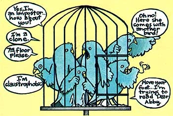

This story is strictly for the birds ...and for folks who loved them!
It was one of those busy-about-the-house days, and since my little blue parakeet-Boy-dearly loved to stretch his wings, I let the bird loose to fly around while I went about my chores of cake baking, dress remodeling, and sorting out items to take to the Goodwill Industries.
A few hours later, my sister came by to add her own donations to my Goodwill bundle, and-as she carried the awkward package in-she propped the door open with her foot for a few seconds. You can probably guess what happened next ...the bird saw his chance and-suddenly-he was gone!
SOMEWHERE ... BLUE BIRDS FLY
I was frantic. I raced around the front yard, the back yard, and up and down the street calling out, "Boy! Boy! Come here, Boy!" No response. After several futile hours of hunting, I telephoned a few of my neighbors and asked them to please be on the lookout for my pet. Finally, I called the local newspaper to place an ad in the "Lost and Found" column, promising a reward for the parakeet's return.
That night (as any pet lover will understand), I slept very little. I kept thinking about my lost friend shivering and hungry in some tree or bush. The following day was equally sad. I tried to keep busy, so I wouldn't picture poor Boy alone in the world (at the mercy of the elements and the neighborhood cats), yet the sight of his empty cage would bring tears to my eyes. I hoped that someone would find and take good care of him, even if I never got him back.
However, I soon learned that I'd underestimated the power of the press ...because-immediately after my ad appeared - eight people called me to report that they'd found the tiny runaway! Delighted but anxious, I opened the door before the first visitor even had time to ring the bell. A very angry peep issued from the paper sack in the stranger's hand ...and 1 knew that voice! We opened the bag and put it up to Boy's cage. Joyfully, I watched the bird scamper out. I spoke to him. "Boy, where have you been?" He cocked his little head to one side in recognition and went right to his seed cup.
The man refused my reward ...so I thanked him profusely, and-after seeing him to his car-went back to scold my prodigal pet for creating so much trouble and distress.
TWO'S COMPANY
About that time, the doorbell rang. I happily answered it, and told the bird-catcher that my parakeet was home safe and sound and that all was well. The woman insisted, however, that I take a look to see whether her find might not actually be the pet I'd lost. Well, I was so pleased at having Boy back that I figured I could afford to humor her, but when we put the blue cheeper in an old cage that Boy had outgrown, I was startled by how much it resembled my bird! A little disconcerted, I called the new arrival "Boy", and-would you believe!-he reacted just as my own parakeet would have. Was it possible, I wondered, that I'd made a mistake?
"Didn't I tell you it was your bird?" the woman laughed. What could I say? I thanked her and gave her the reward. Then, as I opened the door to bid her goodbye, there stood a bright-eyed lad, and-yes-in his hand he had a sack from which emanated some irritated (and uncannily familiar) cheeps.
I can only say that, financially, I'm now somewhat poorer than I was a short time ago ...but I'm extremely rich in joy! Eight little parakeets are happily chirping in their new outdoor aviary, and-to this day-I still don't know for sure whether any one of them is Boy.
|
 |
|
|